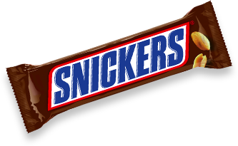

Top 5 chocolate bars

- 1:Snickers
- Snickers holds the top spot for the bestselling chocolate bar in the world. Made by Mars, Incorporated, Snickers has annual global sales of $2 billion. The bar consists of nougat topped with caramel and peanuts covered in milk chocolate. It was named after the Mars family’s favorite horse when it was introduced in 1942. Since the 1970, it had numerous variations including Snickers ice cream bar, Snickers dark chocolate, Snickers almond, Snickers peanut butter and more

- 2:Toblerone
- Toblerone is a popular chocolate bar known for its triangular prism shape. It is owned by Kraft Foods, an American grocery manufacturing and processing company. Its name is a combination of the Italian word “torrone” (a type of nougat) and its creator Theodor Tobler. He created the Toblerone in 1908 in Bern, Switzerland together with his cousin Emil Baumann. Over 11 variants of Toblerone have been produced since the 1970’s including the dark chocolate in a green or black triangular box, fruit and nut, filled editions in a blue triangular box, which is a milk chocolate with a white chocolate center; crunchy almond, snow-capped with white chocolate peaks in a white/ silver triangular box and honeycomb crisp among others.

- 3:Cadbury Chocolate Bars
- The British confectionary company, Cadbury, is owned by Kraft Foods under its confectionary business, Mondelez International, the unit that is geared towards global snacks business. Cadbury is best known for its dairy milk chocolate. Its founder is John Cadbury, a philanthropist and businessman, who created the modern chocolate bar. He pioneered the emulsification process of chocolates to make it become solid. From 1865 to 2012, there have been numerous Cadbury chocolate products such as confectionery, beverages, biscuits and cooking products.

- 4:Mars
- Mars is another chocolate bar manufactured by Mars, Incorporated. The chocolate bar has various versions in the United States, Canada and the United Kingdom. It was first manufactured in the UK in 1932 as the sweeter version of another Mars Incorporated product produced in the United States. The U.S. version of Mars was discontinued twice, first in 2002 and was re-launched in 2010 but was discontinued again at the end of 2011. There have been several limited edition variants of Mars released in different countries such as the Mars Lite, Mars Lava and Mars Fling, which is available in Australia; Mars Midnight, which has become a permanent release in Canada but was on limited edition in the UK; and the Mars Mini Eggs, which are available during Easter.

- 5:Milky Way
- The Milky Way Bar is manufactured by Mars, Incorporated with various versions in different countries. The American version is made of chocolate-malt nougat and covered in milk chocolate with caramel toppings while the European version has a nougat center with no caramel toppings. The Milky Way Bar was created by Frank C. Mars in Minneapolis, Minnesota in 1923. The chocolate bar has different calorie contents depending on the country